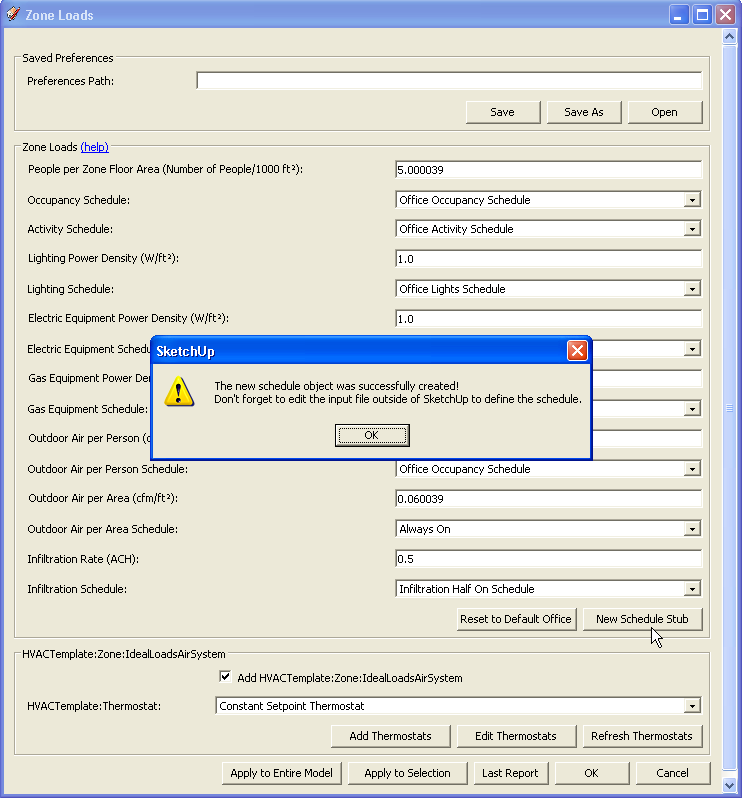
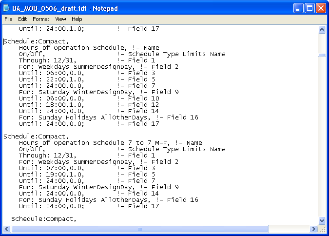
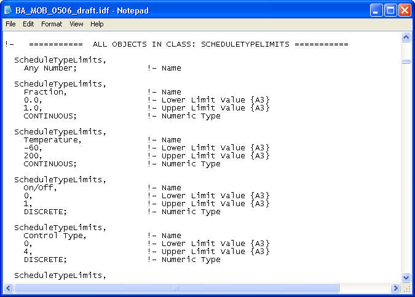
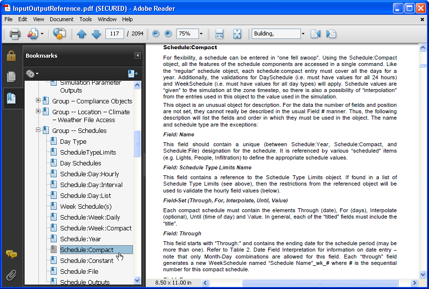
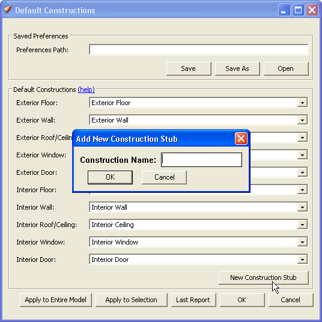
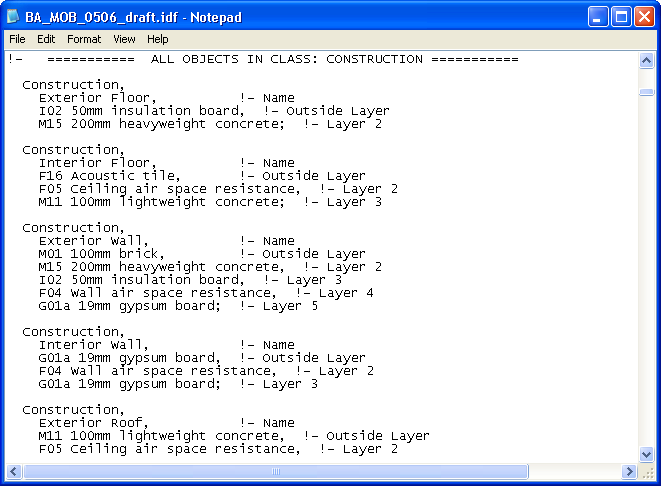
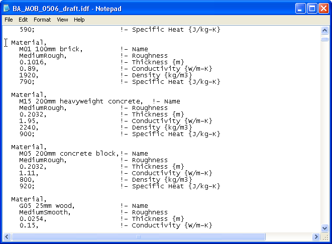

|
|
IDF 101 - Editing and copying IDF objects
Edit IDF Schedules
- There are many objects within an IDF file
that you will need alter or copy outside of OpenStudio. This tutorial
will go over a few
examples. It assumes you have read the IDF
primer tutorial and are
familiar with the structure of an IDF file.
- OpenStudio's template file has a number of built in
schedules for lighting, people, etc. You can simply use these schedules
for your building model.
However, you will likely need to modify or add new schedules for your
particular needs.
The Zone Loads dialog allows you to create new schedule
stubs. These are placeholders for schedules. You can assign the
schedules to objects, but you need to create the content for the
schedule outside of OpenStudio before you run a simulation. The Zone
Loads dialog is pictured below, along with the alert you see after you
create and name a new
schedule stub.

(Credit: David Goldwasser/NREL)
- Below is part of an IDF file showing two schedules.
The top is one of the schedules in the OpenStudio template IDF file.
The bottom one shows an altered and renamed copy of
the schedule. Once the schedule is change you can select it and use it
for simulations in OpenStudio. The schedule's days and hours were
adjusted.

(Credit: David Goldwasser/NREL)
- "Schedule:compact," identifies the type of object
being described.
- "Hours of operation schedule" is the name of the
object.
- Schedules have a "Schedule Type" which determines the
type of
values which can be entered in the schedule. See
the image below for some example "Schedule Type" values. The one above
is just on or off.
Some other types are "fraction" and "temperature". Fraction could
be used to identify the fraction of max occupancy at any given time,
and temperature can be used to control thermostat set points.
- The schedules above are the same through the entire
year, hence the "Through: 12/31". If for example this was as school
there would be three unique statements similar to what is shown below.
- Through: 05/31,
- !- followed by detail for 01/01 through 05/31,
- Through: 08/31,
- !- followed by detail for 06/01 through 08/31,
- Through: 12/31,
- !- followed by detail for 08/31 through 12/31;
- The first "Through" statement is always from 01/01 to
that date. Your last "Through" statement should be "Through: 12/31".
- The approach for the hours of the day is similar. The
first "Until" statement is from midnight until the time shown (6am and
7am in examples above).
- Time is in 24 hour format. The number after the time
is the value for the type limit. In this case "0.0" is off, and "1.0"
is on.
- You can have the same daily schedule for all days, or
make unique schedules for weekends, holidays, and other days. Winter
and
Summer Design days are special days used by EnergyPlus for design day
simulations. Look through the EnergyPlus documentation for more
information on design days. Below is a list from Energy+.idd of the
different day types
that you can use.
- \field DataType List 1
\begin-extensible
\note "For" is an optional prefix/start of the For fields. Choices can
be combined on single line
\note if separated by spaces. i.e. "Holiday Weekends"
\note Should have a space after For, if it is included. i.e. "For
Alldays"
\required-field
\type choice
\key AllDays
\key Weekdays
\key Weekends
\key Sunday
\key Monday
\key Tuesday
\key Wednesday
\key Thursday
\key Friday
\key Saturday
\key Holiday
\key SummerDesignDay
\key WinterDesignDay
\key CustomDay1
\key CustomDay2
- Below are some examples of schedule types that can be
assigned to a schedule.

(Credit: David Goldwasser/NREL)
- Below is a screenshot showing the description for
"Schedule:Compact" in the EnergyPlus InputOutputReference pdf file.

(Credit: David Goldwasser/NREL)
Back to Top
Materials and Constructions
- Another IDF object that you may want to change
are the constructions and underlying materials used for your building
surfaces.
- There are several dataset files with EnergyPlus that
define common construction materials and constructions.
- Similar to the Zone Loads dialog, the Default
Constructions dialog allows you to create new construction stubs. As
with the schedule stubs, this allows you to start assigning that
construction to surfaces, but you can't run a simulation until
you edit the IDF to define the material layers for the construction
object.

(Credit: David Goldwasser/NREL)
- Below are some example constructions from the
OpenStudio IDF template file. The objects are pretty self explanatory.
They have a name, and then list the layers of materials used. As with
all objects, remember to use a semi-colon instead of a comma after the
last layer.

(Credit: David Goldwasser/NREL)
- So what is "M01 100mm brick" anyway? This is just a
name, but one would guess it represents a brick that is 100mm thick.
Look below at sample materials, and you will see it isn't just a
material being described, but also the thickness of that material as it
will be used in a construction. If you had thin and thick bricks of
made of the same exact material, you would still have two separate
material objects to describe them.
- As with all objects, the first line indicates that we
are describing a "Material" object. Next is a name, followed by fields.
The brick is 0.1016 meters thick, which nominally is 100mm, so the name
was a good indicator of this. There are also fields for the material
roughness, conductivity density and specific heat. There are other
optional fields that EnergyPlus assigns default values to if they are
not described in the IDF. Material color is an example of a field with
a default value.
- The fields shown below are all required, but if there
were an optional field and you didn't want to manually assign a value,
you can't just skip the field. You would have to have a comma there to
indicate
the field position; remember that EnergyPlus doesn't use the comments
at
the right,
so it can only use the order of fields to identify what field a value
belongs to. If the optional field(s) that you want to skip are at the
end of the list of fields, you can leave them off.
- There are many more advanced material settings and
special material types such as "Material:RoofVegitation". You can
learn about them in the InputOutputReference.pdf file.
- As you modify your materials and constructions keep
in mind that you have to keep the names in sync. If you change the
material name, but don't change the name used in the construction,
EnergyPlus will report an error back when you run a
simulation.

(Credit: David Goldwasser/NREL)
|
|
|